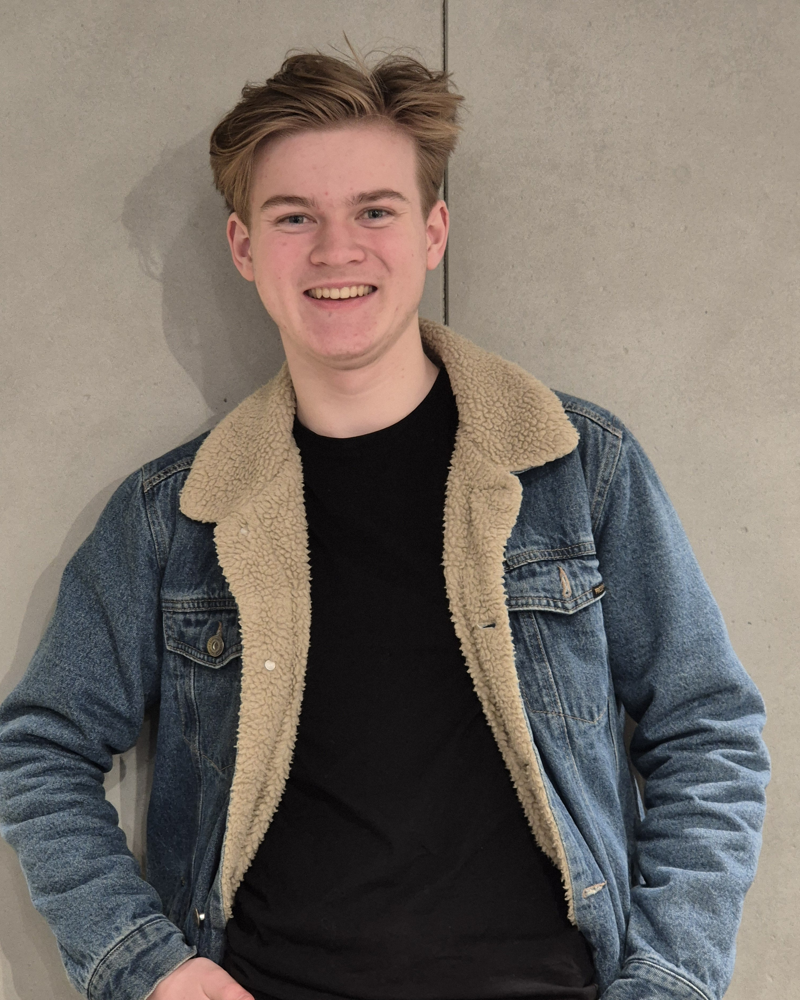

Game Developer Portfolio

I'm James, a game developer based in Australia. I have been studying and making games for the past 3 years, I’ve worked on teams ranging from two-person projects to an indie studio of over 60 people.
I strive to create games that effectively bring out the best in players through meaningful challenge. I am intrigued by how games utilise player psychology and flow state dynamics to create engaging experiences that teach a player skills that can be used outside of a game.
I am currently studying a Bachelor of Games Development at the University of Technology Sydney. I have a background in acting and filmmaking, and I wish to use my experience in these fields to create cinematic game experiences. I am eager to learn new skills and tackle challenging problems in the process.
Projects I'm actively working on or planned future projects.
Completed games and interactive experiences, from most to least recent.